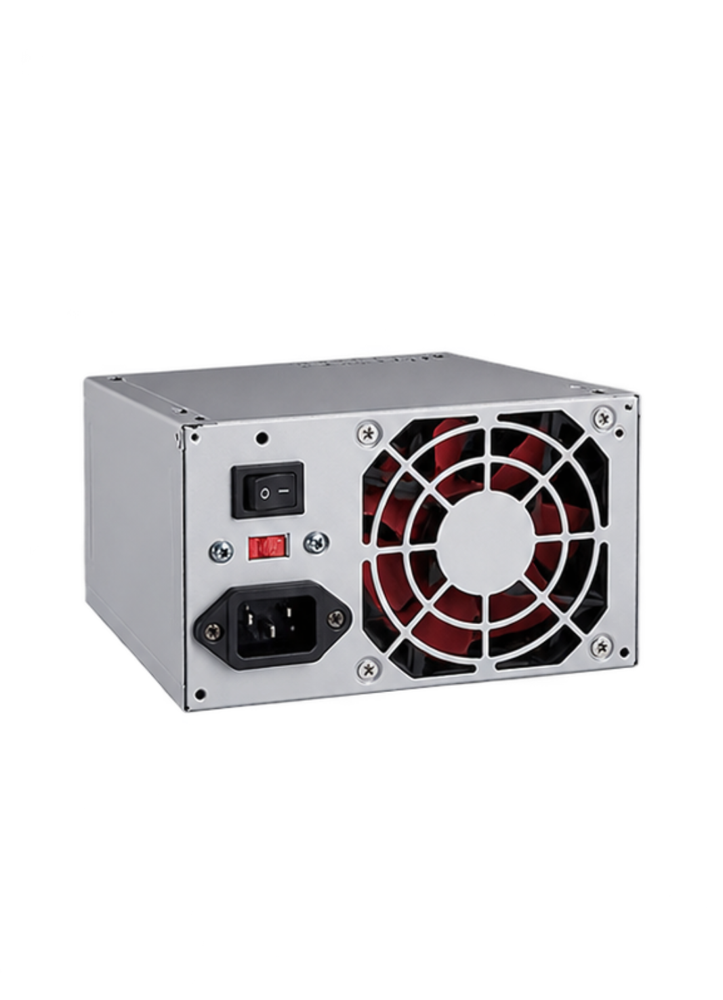

Back to hardwareKey Specifications:
- Maximum power output (watts)
- Efficiency rating (80 PLUS)
- Form factor (ATX, SFX)
- Available power connectors
What is it?
- The Power Supply Unit (PSU) is a computer component that converts electricity from a wall outlet into the appropriate DC power required by computer hardware.
Function
- The PSU supplies stable electrical power to the computer's components, helping them operate safely and reliably.
How it works with other components
- The PSU supplies power to the motherboard, CPU, GPU, storage devices, and cooling fans through dedicated cables and connectors. Choosing a PSU with sufficient wattage and compatible connectors helps ensure that all components receive the power they need.